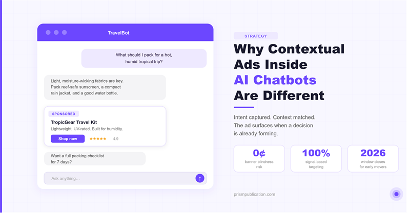

ad-tech
Why Contextual Ads Inside AI Chatbots Are the Most Underpriced Surface in Digital Advertising

What is the direct answer?
Display ads interrupted. Search ads followed intent. AI chat ads appear at the exact moment a decision is forming. Here is why that matters, and what publishers and brands need to know right now.
What are the key takeaways?
- A contextual ad in an AI chatbot is a partner integration that surfaces at the moment a user's conversation reveals a specific intent.
- Intent is captured at its most explicit.
- If you run an AI chatbot, a customer service bot, a content assistant, a niche tool for any vertical, you are already sitting on a monetizable surface.
Every major ad format in digital history followed the same arc: early movers captured enormous value, the surface got crowded, click-through rates cratered, and everyone moved on to the next thing. Banner ads, search keywords, social feeds, pre-roll video. Each had its golden window.
AI chat interfaces are in that window right now. And most brands do not realize it yet.
What is a contextual ad inside a chatbot?
A contextual ad in an AI chatbot is a partner integration that surfaces at the moment a user's conversation reveals a specific intent. It is not a banner. It is not a pre-roll. It is a response element: a product recommendation, a service suggestion, a relevant link, that appears because the conversation itself created the right opening.
The distinction matters. Traditional display advertising is placement-based: you buy a slot on a page and hope the right person sees it. Contextual chatbot advertising is signal-based: the user's own words trigger the match.
A user asking a travel chatbot "what should I pack for a hot, humid trip?" is expressing clear intent. A contextual ad serving a luggage brand or a travel pharmacy at that moment is not an interruption. It is a useful answer.
Why does this perform better than legacy formats?
Intent is captured at its most explicit. Search ads approximate intent through keywords. A user typing "best running shoes" might be researching, comparing, or ready to buy. In a chat interface, the full conversational context is available. The user has explained their situation. The match is more precise.
There is no banner blindness. Users have trained themselves to ignore rectangular boxes in page margins. A chat interface has no margins. The entire experience is a conversation, and a well-placed partner integration reads as a natural continuation of that conversation rather than an intrusion from outside it.
Dwell time is measured in exchanges, not seconds. Average time spent in a chatbot session significantly exceeds the few seconds most display ads get. Users are actively engaged, thinking, reading, and responding. That is a fundamentally different attention environment.
The surface is not yet saturated. This is the window. Cost per thousand impressions (CPM) in chat interfaces is not yet bid up to the ceiling because demand has not caught up with supply. Publishers who integrate now will benefit from early advertiser interest before the format becomes competitive.
How should publishers think about this?
If you run an AI chatbot, a customer service bot, a content assistant, a niche tool for any vertical, you are already sitting on a monetizable surface. The question is not whether to monetize it but how to do it without breaking the experience users came for.
The answer is selectivity. A chatbot that serves generic banner-style ads on every turn degrades fast. A chatbot that surfaces one highly relevant product suggestion when the conversation warrants it builds trust and earns click-through rates that legacy formats cannot touch.
The operational requirements are straightforward:
- An SDK or API integration that passes conversation context to an ad matching layer
- Category and topic controls so the publisher decides what types of ads are eligible
- Clear visual treatment so the integration is transparent to the user
Publishers retain control over what appears and when. That is a meaningful shift from the display ad model, where the exchange largely controlled what showed up on your page.
How should advertisers think about this?
The buy side has not fully woken up to this surface yet, which is the opportunity.
AI chat interfaces are growing fast. Perplexity, ChatGPT, Claude, and hundreds of vertical AI assistants collectively handle billions of conversations per month. Each of those conversations is a signal-rich environment that existing ad targeting infrastructure was not built to reach.
Brands that figure out contextual chat advertising now will build category ownership at a fraction of the cost they will pay later, when every major demand-side platform has a chatbot inventory line item.
The playbook is not complicated: identify the chatbots your target users are already using, understand what kinds of conversations those bots are having, and build integration packages that are genuinely useful in that context. A financial planning bot is a natural fit for a bank's savings account offer. A recipe assistant is a natural fit for a grocery delivery service. A language learning app is a natural fit for a travel brand.
Relevance is the product. If your ad is the right answer to the question being asked, it does not feel like an ad.
How should the integration be labeled?
Users are increasingly skeptical of how AI systems make recommendations. That is a reasonable response to a few years of affiliate link scandals and undisclosed sponsorships.
The answer is not to hide the integration. It is to be clear about it. "Sponsored suggestion" or "partner recommendation" alongside a contextually relevant offer is not a liability. It is a signal of a functioning marketplace. Users accept sponsored search results. They accept promoted products in shopping feeds. They will accept partner integrations in chat interfaces if the integration is relevant and clearly labeled.
Publishers who build that trust early will have a durable advantage. Users learn quickly which platforms respect their attention and which ones exploit it.
What comes next?
The infrastructure for contextual chat advertising is being built right now. Marketplaces that connect publishers and advertisers around intent signals from AI conversations will define how this surface matures.
The publishers who integrate early will have revenue before the format is crowded. The advertisers who test now will have performance data before prices rise. The platforms that build the matching layer, connecting the right offer to the right conversation moment, will sit at the center of a market that barely exists today but will be significant within two years.
That window does not stay open forever.
Prism Publication is a contextual ad marketplace built for AI chat interfaces. Publishers integrate once and access a curated network of advertisers matched to their chatbot's conversation context.
Frequently asked questions
What is a contextual ad inside a chatbot?
A contextual ad in an AI chatbot is a partner integration that surfaces at the moment a user's conversation reveals a specific intent. It is not a banner. It is not a pre-roll. It is a response element: a product recommendation, a service suggestion, a relevant link, that appears because the conversation itself created the right opening.
Why does this perform better than legacy formats?
Intent is captured at its most explicit. Search ads approximate intent through keywords. A user typing "best running shoes" might be researching, comparing, or ready to buy. In a chat interface, the full conversational context is available. The user has explained their situation. The match is more precise.
How should publishers think about this?
If you run an AI chatbot, a customer service bot, a content assistant, a niche tool for any vertical, you are already sitting on a monetizable surface. The question is not whether to monetize it but how to do it without breaking the experience users came for.
A chat-ad path that is not ChatGPT-priced
Indie chatbot apps still need labelled partner offers. ChatGPT-scale ad deals are out of reach. The SDK returns a labelled card or nothing. Three lines. The key stays on your server.